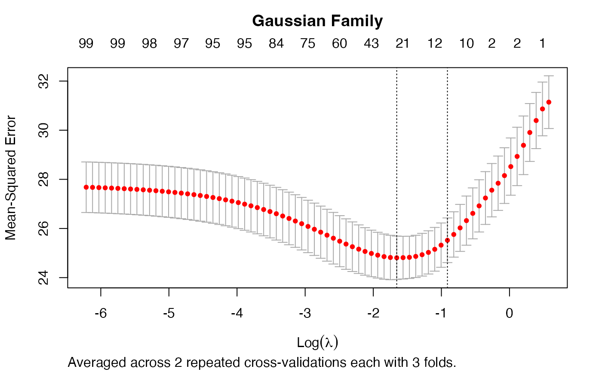

This functions returns the best lambda of repeated glmnet::cv.glmnet()
calls.
rcv.glmnet(
x, y,
lambda = NULL, alpha = 1,
nrepcv = 100L, nfolds = 10L, foldid = NULL, balanced = FALSE,
...,
trace.it = interactive()
)matrix, as in cv.glmnet.
response as in cv.glmnet.
numeric, optional user-supplied lambda sequence; default is
NULL and glmnet chooses its own sequence.
numeric(1), the elasticnet mixing parameter, default is 1
(lasso penality); see glmnet::glmnet() for details.
integer(1), number of repeated cross-validations (outer
loop).
integer, number of folds, same as in cv.glmnet.
matrix, an optional matrix with nrepcv rows and
nrow(x) columns containing ids from 1 to nfolds identifying what fold
each observation is in. If given nrepcv and nfolds are ignored.
logical, should classes/status be balanced in the folds
(default: FALSE)?
further arguments passed to cv.glmnet.
integer, if trace.it = 1, then a progress bar is
displayed.
An object of class rcv.glmnet that extends the cv.glmnetclass.
Jerome Friedman, Trevor Hastie, Robert Tibshirani (2010). Regularization Paths for Generalized Linear Models via Coordinate Descent. Journal of Statistical Software, 33(1), 1-22. URL https://www.jstatsoft.org/v33/i01/.
Noah Simon, Jerome Friedman, Trevor Hastie, Rob Tibshirani (2011). Regularization Paths for Cox's Proportional Hazards Model via Coordinate Descent. Journal of Statistical Software, 39(5), 1-13. URL https://www.jstatsoft.org/v39/i05/.
# Examples taken from ?"glmnet::cv.glmnet"
set.seed(1010)
n <- 1000
p <- 100
nzc <- trunc(p/10)
x <- matrix(rnorm(n * p), n, p)
beta <- rnorm(nzc)
fx <- x[, seq(nzc)] %*% beta
eps <- rnorm(n) * 5
y <- drop(fx + eps)
set.seed(1011)
# nrepcv should usually be higher but to keep the runtime of the example low
# we choose 2 here
rcvob <- rcv.glmnet(x, y, nrepcv = 2, nfolds = 3)
plot(rcvob)
title("Gaussian Family", line = 2.5)

coef(rcvob)
#> 101 x 1 sparse Matrix of class "dgCMatrix"
#> s1
#> (Intercept) -0.1162737
#> V1 -0.2171531
#> V2 0.3237422
#> V3 .
#> V4 -0.2190339
#> V5 -0.1856601
#> V6 0.2530652
#> V7 0.1874832
#> V8 -1.3574323
#> V9 1.0162046
#> V10 0.1558299
#> V11 .
#> V12 .
#> V13 .
#> V14 .
#> V15 .
#> V16 .
#> V17 .
#> V18 .
#> V19 .
#> V20 .
#> V21 .
#> V22 .
#> V23 .
#> V24 .
#> V25 .
#> V26 .
#> V27 .
#> V28 .
#> V29 .
#> V30 .
#> V31 .
#> V32 .
#> V33 .
#> V34 .
#> V35 .
#> V36 .
#> V37 .
#> V38 .
#> V39 .
#> V40 .
#> V41 .
#> V42 .
#> V43 .
#> V44 .
#> V45 .
#> V46 .
#> V47 .
#> V48 .
#> V49 .
#> V50 .
#> V51 .
#> V52 .
#> V53 .
#> V54 .
#> V55 .
#> V56 .
#> V57 .
#> V58 .
#> V59 .
#> V60 .
#> V61 .
#> V62 .
#> V63 .
#> V64 .
#> V65 .
#> V66 .
#> V67 .
#> V68 .
#> V69 .
#> V70 .
#> V71 .
#> V72 .
#> V73 .
#> V74 .
#> V75 -0.1420966
#> V76 .
#> V77 .
#> V78 .
#> V79 .
#> V80 .
#> V81 .
#> V82 .
#> V83 .
#> V84 .
#> V85 .
#> V86 .
#> V87 .
#> V88 .
#> V89 .
#> V90 .
#> V91 .
#> V92 .
#> V93 .
#> V94 .
#> V95 .
#> V96 .
#> V97 .
#> V98 .
#> V99 .
#> V100 .
predict(rcvob, newx = x[1:5, ], s = "lambda.min")
#> lambda.min
#> [1,] -1.3447658
#> [2,] 0.9443441
#> [3,] 0.6989746
#> [4,] 1.8698290
#> [5,] -4.7372693